Select a block, like a spreadsheet
Drag over cells, Shift+click or Shift+arrows: the footer counts, sums, averages and finds the min and max. A right click copies the block (with headers if you like), exports just those cells to CSV, Excel or PDF, or charts them. Header bands group the customer, product and amount columns. In AG Grid these are Enterprise features; here they are MIT.
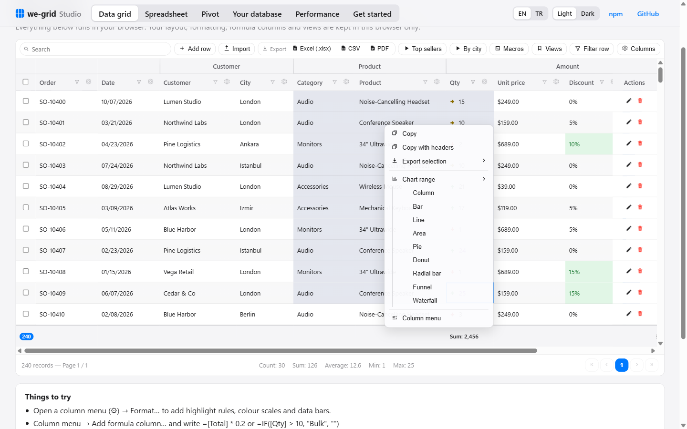
A chart from the selection, an editable chart in Excel
The chart opens with its category and series picked and repeated categories summed. Nine types, stacked, values on the bars, switched axes. It downloads as PNG or SVG, as an Excel file with a native Excel chart over its data, or copies as an image; a click on a bar can filter the grid. The plot is keyboard navigable and described in one sentence for screen readers.
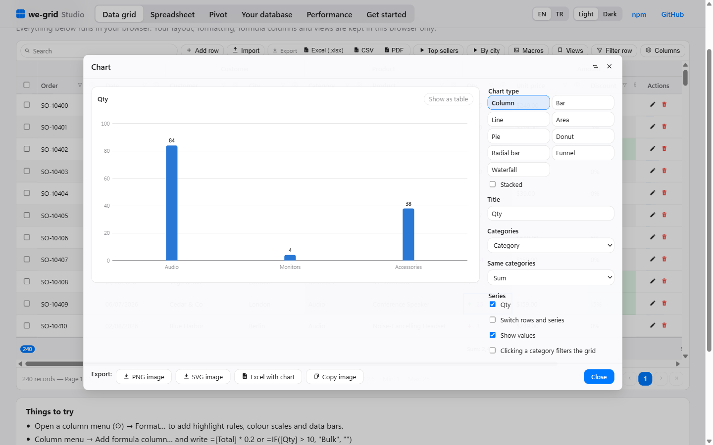
Charts a keyboard can read
Every chart type over the same 240 orders: a heatmap of orders by category and month, a waterfall that builds revenue up by category, stacked columns, a donut, a funnel, a radial bar. Each plot is one tab stop; the arrow keys step through its values (the ring and tooltip on Laptops) and a screen reader hears each one. Under every chart, one sentence: how many values, the highest, the lowest, the total, and the trend of a line. Plain SVG, theme colours, no charting library.
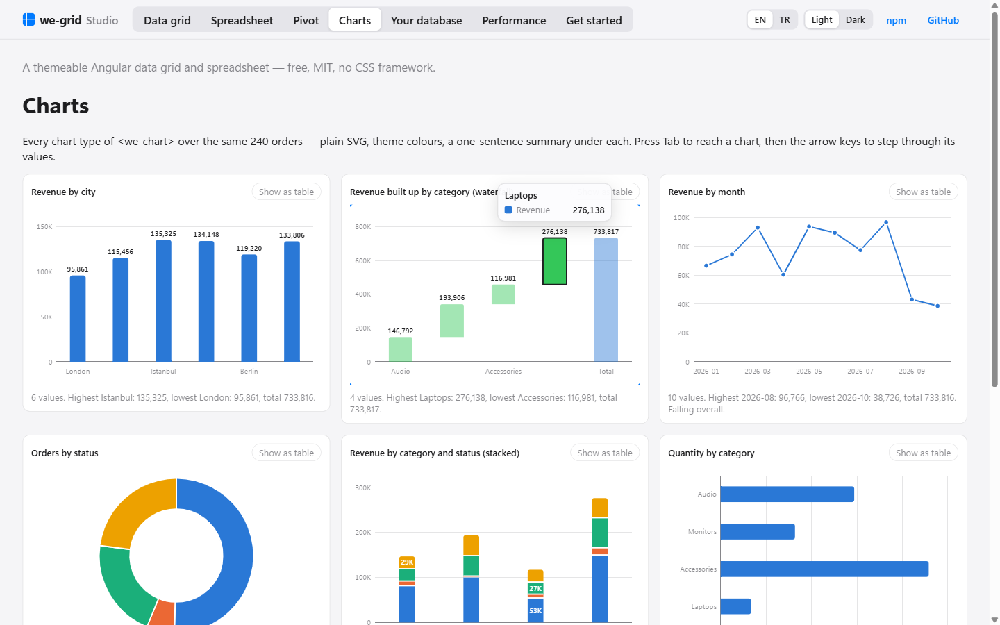
A million rows, measured side by side
One million fictional rows, the same columns and formats, in the same browser. Against AG Grid Community the column engine renders about 12×, sorts 90×, filters 45× and searches 10× faster in the documented run; this later run shows 12× / 78× / 32× / 13×. Each step shows two times: until the result is on screen, and the longest the page went without drawing a frame. The JS heap column is the whole page's, after the runs before it. Run it yourself in we-grid Studio; method in performance.md.
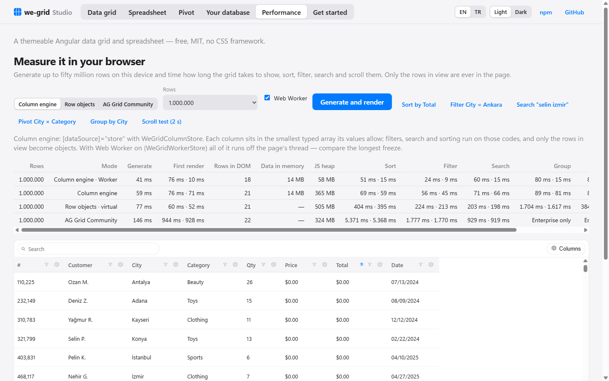
Ten million rows in a Web Worker
Ten million generated sales are ready in about a second, stored as compact typed columns inside a worker. The search for two words runs over all of them without freezing the page, and the pivot below reads the same store.
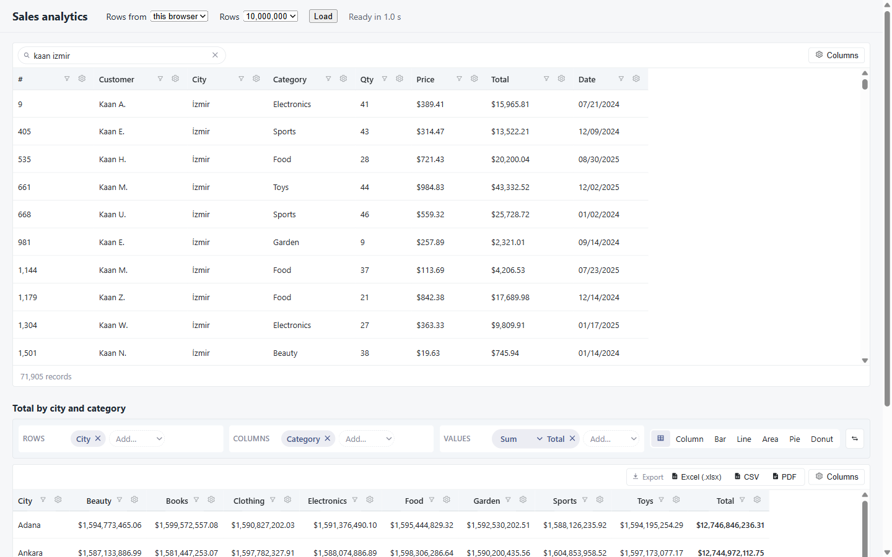
A billion rows from a database
The same screen on a fictional billion-row DuckDB table behind the we-report Node.js backend. The grid asks only for the rows in view, so it sits at row 750,000,000 as easily as at row one; the pivot's groups are worked out by the database.
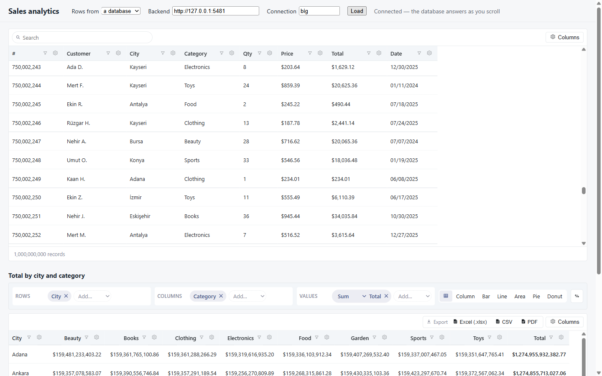
500 orders, one page at a time
The grid never pages by itself. It renders the rows you hand it and reports what the user asked for — page, sort, filter — as events. Here the mock backend answers each one, and the KPI cards above the grid are computed over the whole filtered set, not the 25 visible rows.
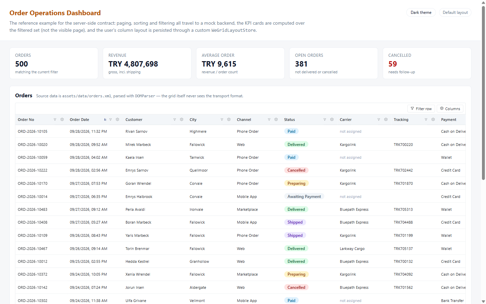
Everything the end user is allowed to change
Right-click a header — or use the gear button on it — and the whole column vocabulary is there: hide, rename, pin, sort, fit width to content, pick a subtotal function, switch density, group by this field, reset. No host-app wiring; the grid owns this menu.
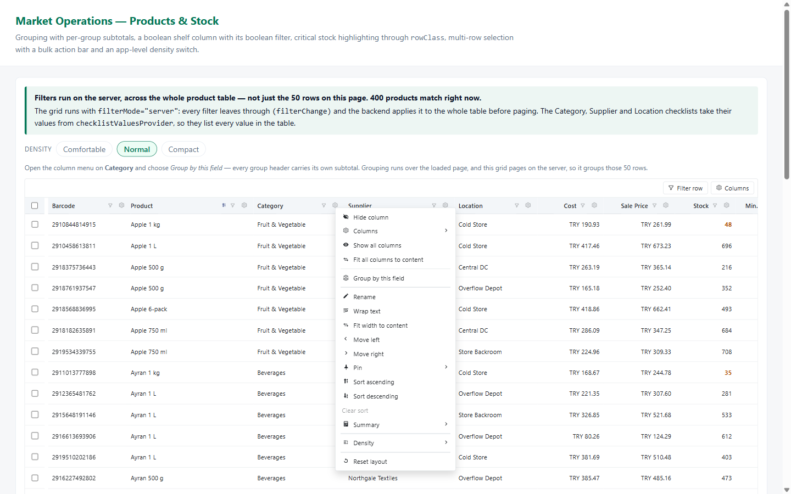
Filter row, chips, and totals that follow
Free-text, date and amount columns get an operator and a value; closed-set columns like
City get a checklist button. Active filters collapse into removable chips above the
header. Ticking Fallowick in City takes 500 orders down to 26 — every page of
them, because the filter runs on the backend — and the revenue and cancellation figures
move with it. The pill on the right flips once a layout has been saved for this user.
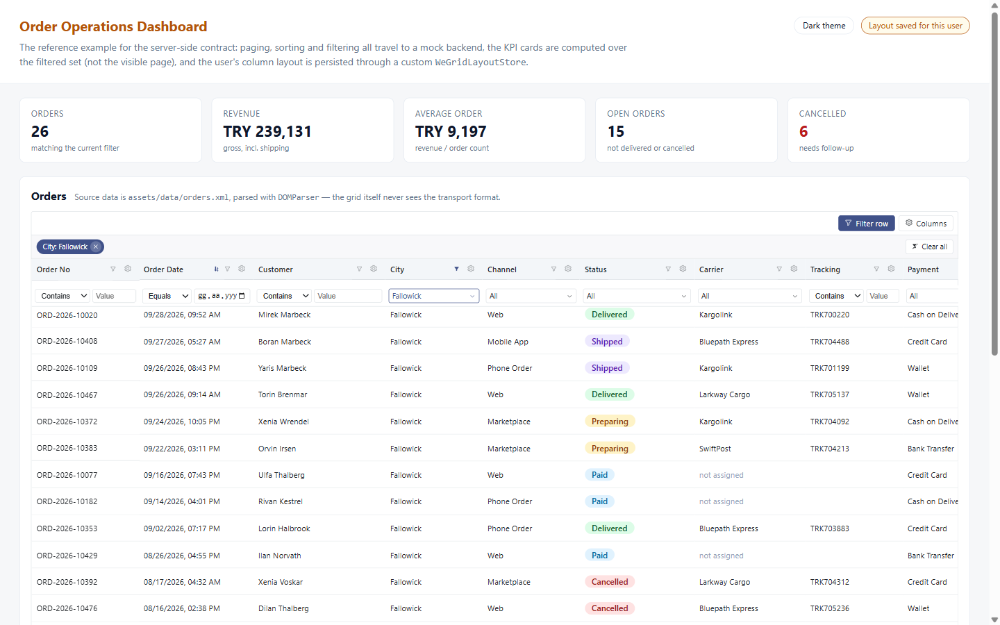
Tick the values, not the operator
Every filterable column's funnel opens this by default: the distinct values — here of every
order, through checklistValuesProvider, not just the loaded page — searchable,
with a select-all box and an entry for blanks — and the selection leaves as a single 'in' filter
carrying the raw codes, which the backend turns into one IN (…) over every
order. The labels come from the column's displayValue, so the user ticks
"Shipped" while the query gets 40.
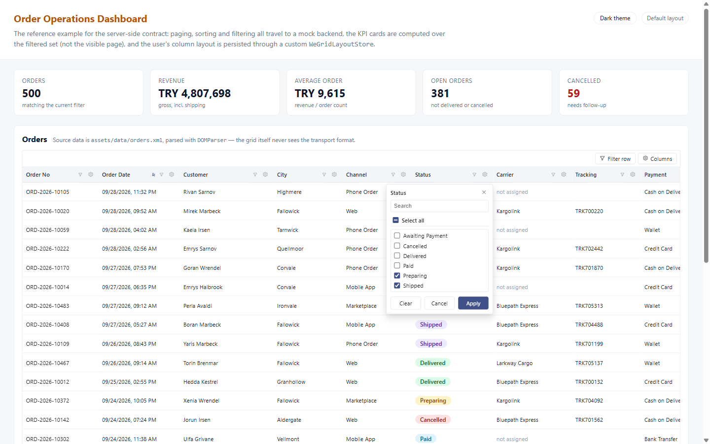
Grouped, subtotalled, and selected
Grouping by a column turns the body into collapsible sections, each header carrying its own subtotals — here a sale-price average and a stock sum per category. Selection is the host app's business: the grid reports it, the sample turns it into a bulk action bar with the retail value of what is ticked. The note above the grid is the other half of this sample: filters and checklists cover all 400 products on the server, not the 50 on screen.
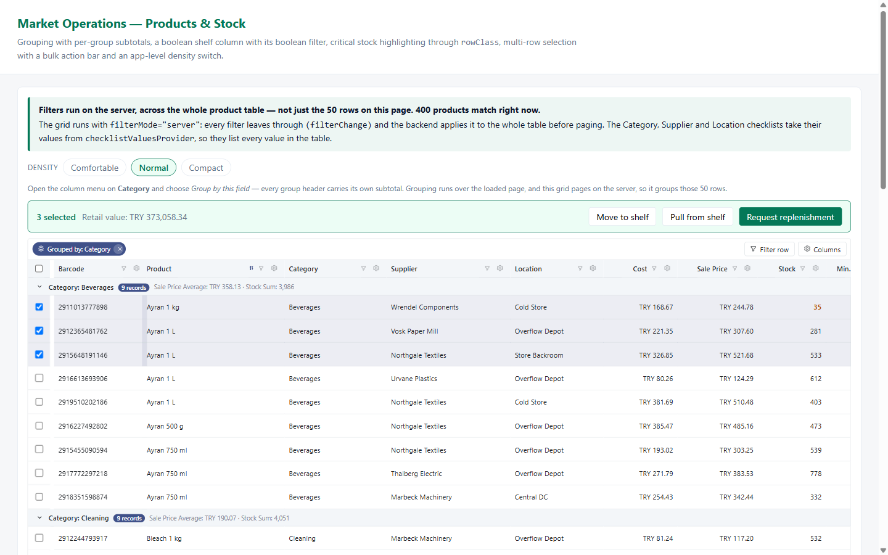
A row that opens into its own breakdown
Master-detail is an Angular template you project into the grid, so the detail area is ordinary markup in your component with your own styles applied. The account number column stays pinned to the left while the rest of the table scrolls sideways under it.
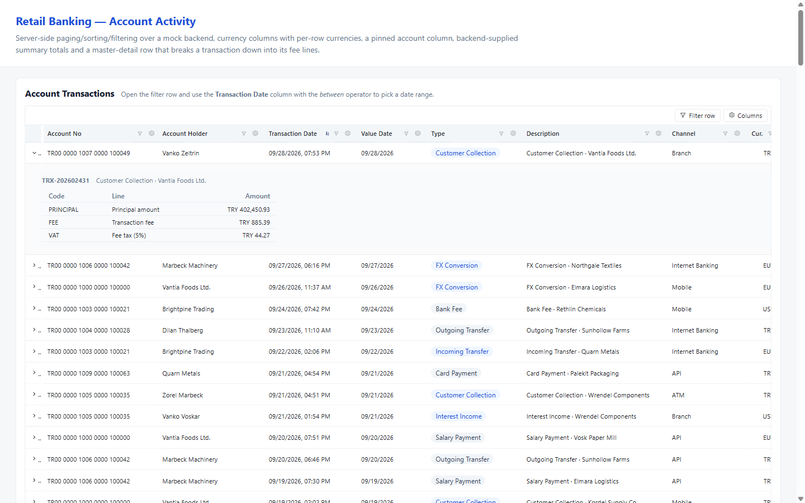
Dark mode is one attribute
Every colour in the grid is a --we-grid-* custom property. Setting
data-theme="dark" on any ancestor switches the whole set; leaving it off
follows the operating system instead. There is no theme input, no second stylesheet, and
nothing to rebuild — override the properties and the grid is in your brand.
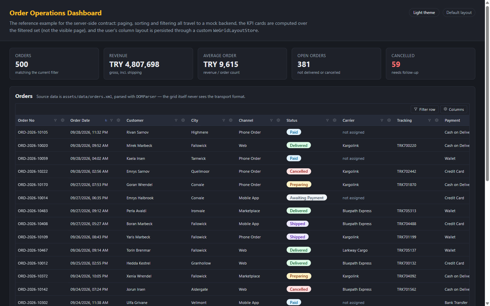
The layout belongs to the user, not the code
Which columns are visible, how wide they are, what they are called, where they are pinned
and in what order — all of it is saved under the grid's gridKey and restored
on the next visit. localStorage is the default; implement one interface and it goes to
your backend per user instead.
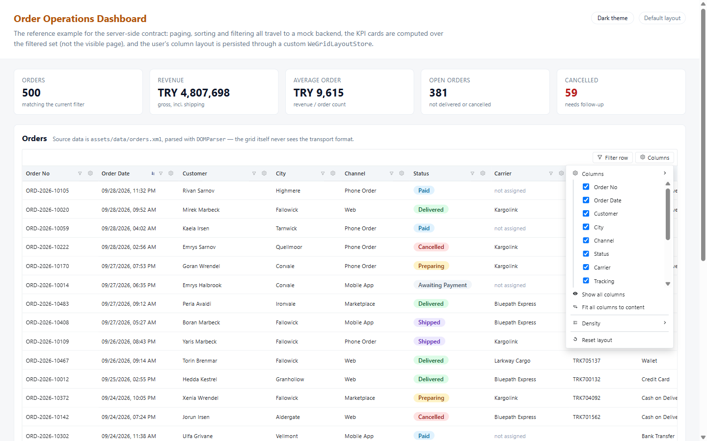
The spreadsheet that opens and saves real Excel files
Excel formulas and number formats, a named range, filter buttons, a chart over the
selected columns, the status bar adding up the selection and coloured sheet tabs. Merges,
borders, notes, hidden rows, frozen panes, conditional formatting and the chart all go
into the .xlsx and come back out of it.
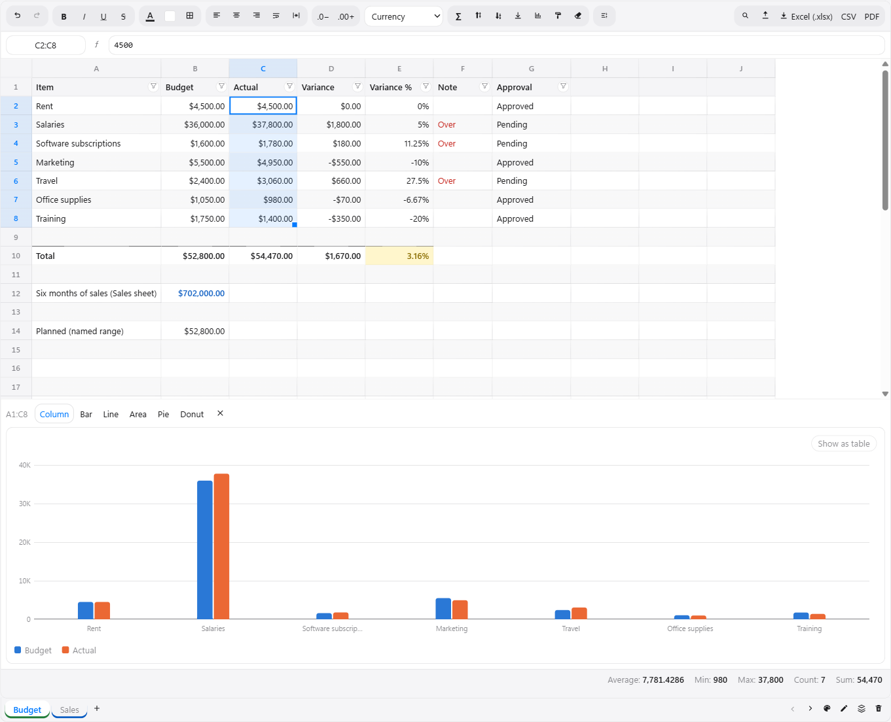